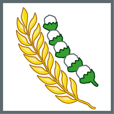

<<!DOCTYPE html>
<html>


    <head>
        <title>Tugas Praktikum 1</title>

    </head>

        <body>
            <br>
            <h1 align=center>PANCASILA</h1>
                <br>
                
                <h4>Ketuhanan Yang Maha Esa</h4>

                <br>
                
                <h4 align="right">Manusia Yang Adil dan Beradab</h4>

                <br>
                
                <h4>Persatuan Indonesia</h4>

                <br>
                
                <h4 align="right">Kerakyatan yang dipimpin oleh hikmat kebijaksanaan dalam permusyawaratan/perwakilan</h4>

                <br>
                
                <h4>Keadilan sosial bagi seluruh rakyat Indonesia</h4


            </br>
        </body>
</html>    